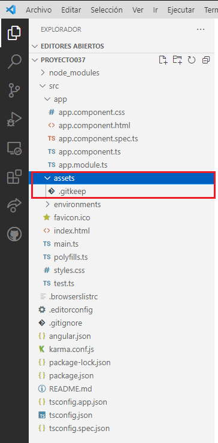
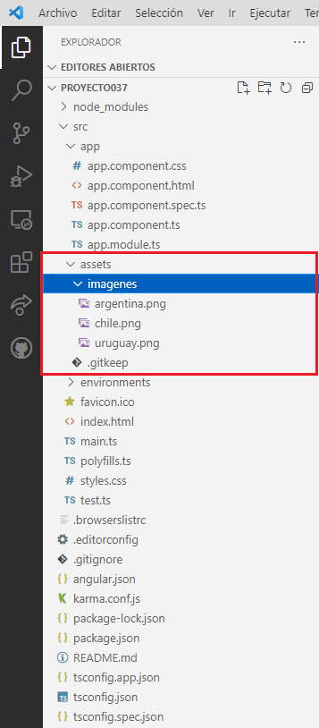
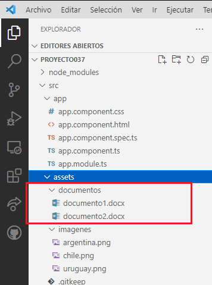
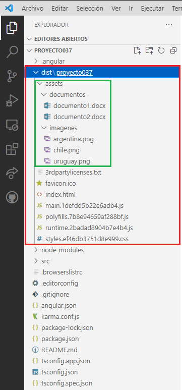

En la carpeta assets disponemos archivos de imagenes, videos y otros archivos (por ejemplo si tenemos una serie de archivos pdf que se descargar de nuestra aplicación) que se copiarán tal cual en la aplicación definitiva.
La carpeta assets en una carpeta hija de 'src':
Cuando Angular CLI crea un proyecto, se crea la carpeta assets y dentro crea un archivo llamado '.gitkeep'.
El archivo '.gitkeep' esta vacío y tiene solo el objetivo que la aplicación de gestion de versiones Git cree la carpeta 'assets' en el repositorio, esto debido a que Git no crearía la carpeta 'assets' si no tiene al menos un archivo en su interior.
No hay ningún problema luego de insertar algún archivo en esta carpeta que borremos el archivo '.gitkeep'.
Podemos organizar en esta carpeta, subcarpetas agrupando las imágenes, videos y otros archivos. Recordemos que realizamos un proyecto donde se requerían tres imágenes de banderas, luego organizamos la carpeta 'assets':
Creamos una carpeta llamada imagenes y disponemos las tres imágenes en dicha carpeta.
Luego accedemos a las mismas indicando el siguiente camino:
<img src="assets/imagenes/uruguay.png">
Por ejemplo podríamos disponer una serie de documentos *.docx para ser descargados desde el sitio:
Luego accedemos a los documentos para ser descargados con el siguiente camino:
<a href="assets/documentos/documento1.docx">Documento 1</a>
Cuando compilamos la aplicación de Angular el contenido de la carpeta 'assets' queda sin cambios y debe ser subida al servidor de internet junto con el resto de archivos.
Luego de compilar la aplicación se genera la carpeta 'dist' en la raiz del proyecto, si vemos su contenido nos encontramos que tenemos una copia con todo el contenido de la carpeta 'assets' (no se copia el archivo '.gitkeep'):
